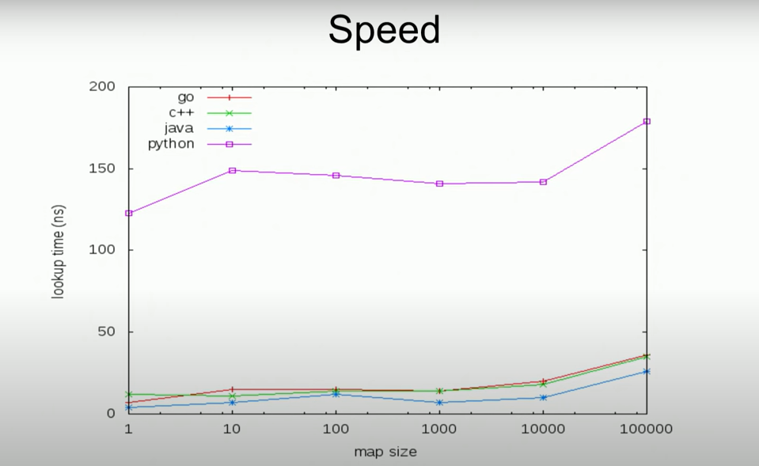

Go 中 map 是键值对的关联容器（Associative Container），可以存储不同类型的键值对，其中键的类型需要满足可比较（==）特性。
基本操作
map 的基本操作如下：
// 构造
m := make(map[key]value)
// or
m := map[key]value{}
// 插入
m[k] = v
// 查找
v = m[k]
// 删除
delete(m, k)
// 遍历
for k, v := range m
// 长度
len(m)
简单实现
type element struct {
k int64
v string
}
type map []element
func (m map) Lookup(k int64) string {
for _, e := range m {
if e.k == k {
return e.v
}
}
return ""
}
上述实现的 map 如果数据规模过大，查找元素的速率会变得很慢。由此，一个加快查找的思想是将多个元素划分到一个子集，即一个桶（bucket），根据 key 值查找到 bucket 的时间复杂度要到 O(1)，从而提前过滤了无关的数据。但为了避免同一个 bucket 存储过多数据，所以要找一个使类似 key 值达到均匀分布的哈希函数。一个好的哈希函数的标准应该是与 key 值的分布无关的，这样才能使用元素各均匀的分布。
哈希函数
哈希函数的必须满足以下条件：
- 对于唯一确定的值，函数的输出也应该是唯一确定的，不存在同一值有两个不同的输出；
- 函数的输出值应该服从均匀分布；
- 计算速度快；
Go Map
Go 的 map 结构如下：
// hmap Go map 的头
type hmap struct {
// key-value 的个数
count int
flags uint8
//
B uint8 // log_2 of # of buckets (can hold up to loadFactor * 2^B items)
noverflow uint16 // approximate number of overflow buckets; see incrnoverflow for details
hash0 uint32 // hash seed
// 指定 bucket 数组的起始地址
buckets unsafe.Pointer // array of 2^B Buckets. may be nil if count==0.
// 用于 map 扩容
oldbuckets unsafe.Pointer
nevacuate uintptr // progress counter for evacuation (buckets less than this have been evacuated)
extra *mapextra // optional fields
}
// bmap 桶
type bmap struct {
tophash [bucketCnt]uint8
}
v := m[k] 编译成如下的代码：
v := runtime.lookup(m, k)
由于 key 和 value 类型的不同，所以 lookup 的函数签名应该如下：
func<K, V> lookup(m map[K]V, k K) V
显然，这是泛型的函数，但在 Go 1.18 前，Go 并没有泛型。所以 Go 在源码中使用 unsafe.Pointer 伪造了泛型。
type _type struct {
size uintptr
equal func(unsafe.Pointer, unsafe.Pointer) bool
hash func(unsafe.Pinter, uintptr) uintptr
}
type mapType struct {
key *_type
value *_type
}
即 key 和 value 在运行时都属于 _type 类型，并且 _type 类型实现了如 equal、hash 等方法。所以 lookup 的签名如下：
func lookup(t *mapType, m *mapHeader, k unsafe.Pointer) unsafe.Pointer
Map 扩容
当 map 中的键值对过多时（负载因子过大），map 会进行扩容。扩容要满足平均一个 bucket 中存在的键值对个数大于 6.5 个，步骤如下：
- 向系统申请原 bucket 数组所占内存两倍的内存；
- 将旧桶中的数据复制到新的桶；
- 操作新的桶；
在复制的过程中，操作 map 的性能损耗相对较高。
与其它语言实现的 map 对比
| C++ | Java | Python | Go | |
|---|---|---|---|---|
| &m[k] | Yes | No | No | No |
| 遍历时修改 | No | No | No | Yes |
| 自定义哈希函数（重载运算符 ==） | Yes | Yes | Yes | No |
| Adversary Safe | No | No | No | Yes |
图 1 查找速度对比

roadmap

总结
- Go 的 map 是基于 hashmap 和 bucket 实现的；
- 哈希函数的作用是使 key 的哈希值尽可能均匀分布；
- 桶中键值对平均个数大于 6.5 时，会进行扩容；
- 在没有泛型机制下，Go 使用 unsafe.Pointer 模拟了泛型；
评论